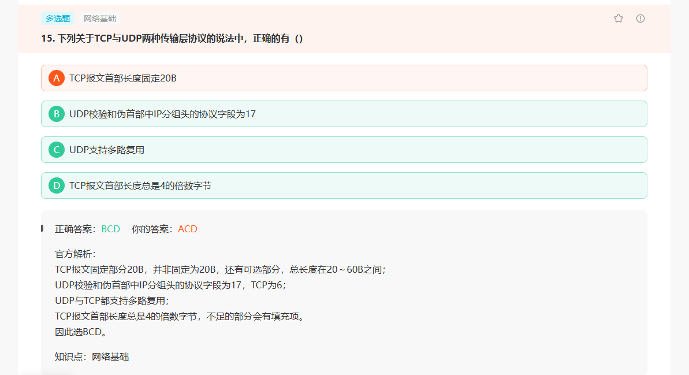
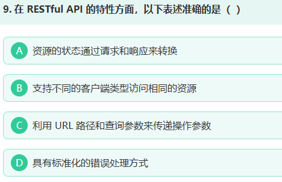
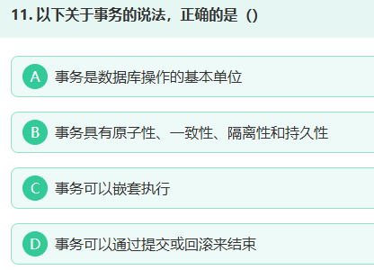
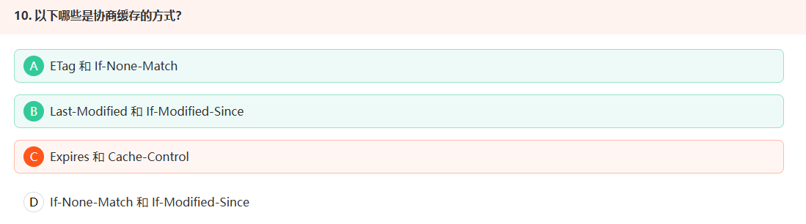
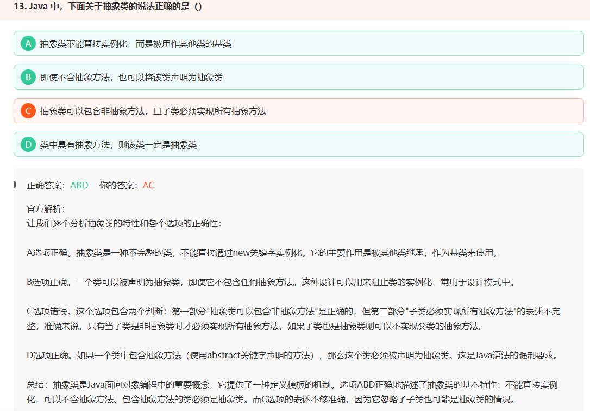

其他¶
13.1 题目¶
-
分治的方法：先拆分为两部分，每部分包含k/2个链表，递归得到这两部分的合并结果，然后再合并这两个链表
- mergeTwoLists：
- 可以设置一个head（空节点），一个tail（实际链表的尾部元素），一个list1（用于遍历list1），一个list2（用于遍历list2）
- 遍历
- 最后返回head.next
- 封装一个子函数，输入为head和tail，表示k个节点的头和尾，翻转后返回新的头和尾
- 初始化时：
cur=head, prev = tail.next - 然后：
while prev != tail
- 初始化时：
- 设置一个空节点dummy_head
- 每次循环依据上一段的tail得出当前段的pre、head、tail（shift k次）、nex，然后对head-tail进行翻转，翻转后再基于pre和nex链接
*dp*(*i*,*j*)=*min*(*dp*(*i*−1,*j*),*dp*(*i*−1,*j*−1),*dp*(*i*,*j*−1))+1- 需要考虑的case极多
- mergeTwoLists：
-
实现多线程并发队列
统计无序数组各元素出现的次数 | god-jiang的git个人博客
23. 合并 K 个升序链表¶
快速复习¶
把每条链表头放入小根堆；每次取最小节点接到结果，并把该节点后继入堆。
详细题解¶
- 分治的方法：先拆分为两部分，每部分包含k/2个链表，递归得到这两部分的合并结果，然后再合并这两个链表
- mergeTwoLists：
- 可以设置一个head（空节点），一个tail（实际链表的尾部元素），一个list1（用于遍历list1），一个list2（用于遍历list2）
- 遍历
- 最后返回head.next
- mergeTwoLists：
Python 实现¶
import heapq
from itertools import count
class Solution:
def mergeKLists(self, lists):
heap = []
serial = count()
for node in lists:
if node:
heapq.heappush(heap, (node.val, next(serial), node))
dummy = tail = ListNode()
while heap:
_, _, node = heapq.heappop(heap)
tail.next = node
tail = node
if node.next:
heapq.heappush(heap, (node.next.val, next(serial), node.next))
return dummy.next
25. K 个一组翻转链表¶
快速复习¶
先确认剩余节点不少于 k 个，再原地翻转这一段并把前后区间重新连接。
详细题解¶
- 封装一个子函数，输入为head和tail，表示k个节点的头和尾，翻转后返回新的头和尾
- 初始化时：
cur=head, prev = tail.next- 然后：while prev != tail- 设置一个空节点dummy_head
- 每次循环依据上一段的tail得出当前段的pre、head、tail（shift k次）、nex，然后对head-tail进行翻转，翻转后再基于pre和nex链接
- 设置一个空节点dummy_head
Python 实现¶
class Solution:
def reverseKGroup(self, head, k):
dummy = ListNode(0, head)
group_prev = dummy
while True:
kth = group_prev
for _ in range(k):
kth = kth.next
if not kth:
return dummy.next
group_next = kth.next
prev, cur = group_next, group_prev.next
while cur != group_next:
nxt = cur.next
cur.next = prev
prev, cur = cur, nxt
old_head = group_prev.next
group_prev.next = kth
group_prev = old_head
221. 最大正方形¶
快速复习¶
dp[i][j] 表示以当前位置为右下角的最大边长；为 1 时取左、上、左上最小值加一。
详细题解¶
*dp*(*i*,*j*)=*min*(*dp*(*i*−1,*j*),*dp*(*i*−1,*j*−1),*dp*(*i*,*j*−1))+1
Python 实现¶
class Solution:
def maximalSquare(self, matrix):
if not matrix or not matrix[0]:
return 0
cols = len(matrix[0])
dp = [0] * (cols + 1)
best = 0
for row in matrix:
diagonal = 0
for j in range(1, cols + 1):
up = dp[j]
if row[j - 1] == '1':
dp[j] = min(dp[j], dp[j - 1], diagonal) + 1
best = max(best, dp[j])
else:
dp[j] = 0
diagonal = up
return best * best
面试题 10.03. 搜索旋转数组¶
快速复习¶
重复值会让有序半区无法判定；两端与中点相等时缩小边界，否则按有序半区二分。
详细题解¶
- 需要考虑的case极多
class Solution:
def search(self, arr: List[int], target: int) -> int:
left = 0
right = len(arr) -1
while left <= right:
# print(left,right)
if arr[left] == target: # 左边相等时直接返回
return left
mid = (left+right) // 2 # mid相等时，将right置为mid
if arr[mid] == target:
right = mid
elif arr[0] < arr[mid]: # 左边有序
if arr[left] <= target < arr[mid]:
right = mid - 1
else:
left = mid + 1
elif arr[0] > arr[mid]: # 右边有序
if arr[mid] < target <= arr[right]:
left = mid + 1
else:
right = mid - 1
else:
left += 1
# print(left, right)
return -1
补充思路： 把综合题拆回熟悉的基础模型，先保证正确，再做复杂度优化。
Python 实现¶
class Solution:
def search(self, arr, target):
left, right = 0, len(arr) - 1
answer = -1
while left <= right:
mid = (left + right) // 2
if arr[mid] == target:
answer = mid
right = mid - 1
continue
if arr[left] == arr[mid] == arr[right]:
left += 1
right -= 1
elif arr[left] <= arr[mid]:
if arr[left] <= target < arr[mid]:
right = mid - 1
else:
left = mid + 1
else:
if arr[mid] < target <= arr[right]:
left = mid + 1
else:
right = mid - 1
return answer
13.2 其余八股¶

Spring框架常用模式：单例模式、代理模式、模板方法、观察者模式、工厂模式、适配器模式
卷积尺寸：输出尺寸=(输入尺寸-filter尺寸+2*padding）/stride+1



